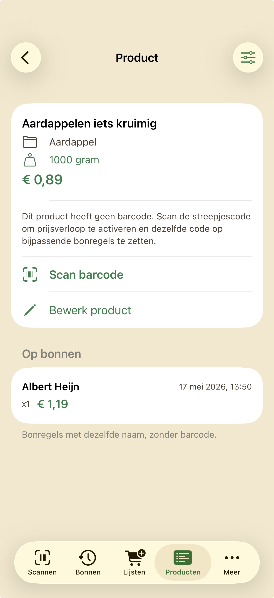

1
Nieuwe bon starten
Kies bovenaan je supermarkt en tik op Nieuwe bon starten. De camera opent om barcodes te scannen. Heb je vandaag al gescand bij deze winkel? Dan zie je Verder met scannen in plaats van een nieuwe bon.

BoodschappenScan helpt je je eigen boodschappenprijzen bij te houden. Deze handleiding laat stap voor stap zien hoe je producten scant, betaalde prijzen invoert, bonnen bewaart en supermarkten vergelijkt.
Nieuw met de app? Lees eerst Slim beginnen. Daar staat waarom je catalogus leeg begint en hoe je een betrouwbaar prijsbeeld opbouwt met je eigen aankopen.
Verwijder je de app? Dan ben je al je gegevens kwijt. Maak vóór verwijderen een back-up: tab Meer → Back-up maken → tik op Kopieer naar e-mail of Kopieer naar iCloud / AirDrop / … en sla het .json-bestand buiten de app op. Alleen op je iPhone laten staan is niet genoeg.
Open tab Scannen, kies je supermarkt en start een bon. Elke bon vult je prijsgeschiedenis met producten en prijzen die je zelf hebt betaald. Hoe consequenter je scant of invoert, hoe beter je later kunt vergelijken.
Kies bovenaan je supermarkt en tik op Nieuwe bon starten. De camera opent om barcodes te scannen. Heb je vandaag al gescand bij deze winkel? Dan zie je Verder met scannen in plaats van een nieuwe bon.
Tik op de supermarktnaam voor een keuzelijst. Standaard staan veel Nederlandse ketens al in de app. Extra winkels voeg je toe via tab Meer → Supermarkten.

Heb je vandaag al een open bon bij deze winkel? Op het startscherm (tab Scannen) zie je Verder met scannen en eventueel Nieuwe bon. Hier staat geen eurobedrag — alleen welke winkel en dat er nog een lopende sessie is.
Tik op Verder met scannen. In de scanner (camera + productlijst) zie je boven de lijst het aantal Regels en het label Totaal met het lopende bontotaal (som van alle regels tot nu toe).


Je kunt in de winkel producten scannen, thuis je kassabon nalopen via Typen, of een foto van de bon laten uitlezen met Bonfoto. Vul de betaalde prijs in en controleer naam, inhoud en categorie.
In de scanner zie je onder het camerabeeld (en boven de productlijst) deze knoppen. Op de meeste iPhones staan ze in twee rijen: Typen · Bonfoto · Catalogus boven, Extra · Sluit scanbon onder.
Scannen zelf doe je met de camera — die knoppen zijn er naast. Boven de productlijst zie je het aantal Regels en het lopende Totaal (bontotaal).
De groene lijn helpt je de barcode te richten. Bij weinig licht: zaklamp rechtsonder. Nog geen producten? Onderaan staat «Nog geen producten gescand».

Na elke scan verschijnt het product in de lijst. Controleer prijs, inhoud, categorie en eenheidsprijs (bijv. €/kg). Zonder inhoud (gram of ml) kan de app niet vergelijken tussen winkels — vul bijv. «500 g» of «1 l» in. Met +/− pas je het aantal aan. Onbekende barcode? De app kan een naam voorstellen — jij bevestigt.
Hetzelfde artikel bij een andere supermarkt? De app koppelt vergelijkbare producten vaak automatisch (zelfde naam, andere barcode). Lijkt een scan op iets dat je al hebt? Dan vraagt de app: Is dit hetzelfde product? — koppel ze om samen op €/kg of €/l te vergelijken. Handmatig koppelen kan altijd via tab Producten → Bewerk product.

Tik op Typen (zie stap 1). Vul de velden handmatig in: naam, aantal, prijs, inhoud en categorie. Bij elk tekstveld kun je desnoods het microfoon-icoon gebruiken om in te spreken in plaats van te typen. Elk product dat je zo toevoegt komt ook in je catalogus (tab Producten).

Tik op Bonfoto (zie stap 1). Maak een foto van je kassabon of kies er een uit je fotobibliotheek. De app leest de tekst lokaal op je iPhone — er gaat niets naar de cloud. Daarna zie je een voorstel («Bon van foto») met herkende regels.
Controleer en pas aan waar nodig: namen, prijzen, winkel en datum. Per regel kun je een product uit je catalogus koppelen of een barcode scannen. Als alles klopt, tik je op Bon maken — de regels komen op je huidige scanbon, net als bij handmatig scannen.
Handig als je thuis je papieren bon wilt nalopen zonder alles opnieuw te typen. Controleer altijd of OCR alles goed heeft gelezen — vooral kortingen, gewicht en productnamen.
Tik op Catalogus (zie stap 1). Kies een eerder product; zoek desnoods op naam of barcode. Handig voor vaste boodschappen zonder opnieuw te scannen. Gratis: max. 200 producten in de catalogus.

Tik op Extra (zie stap 1). Voeg statiegeld, emballage, kortingen of correcties toe — dit zijn géén gewone productregels. Koppel kortingen aan het product via dezelfde naam op de bon. Gebruik een minteken voor kortingen; alleen «Korting» zonder productnaam koppelt niet aan een product. Na blik of fles hoef je statiegeld niet altijd zelf toe te voegen: de app herkent dat vaak en toont een voorstel bovenaan in de scanner.

Via het meter-icoon rechtsboven stel je een limiet in voor deze bon. Je krijgt een waarschuwing als het bontotaal in de scanner (het bedrag bij Totaal) je limiet overschrijdt.

Tik op de groene knop Sluit scanbon (zie stap 1) als je klaar bent. De bon wordt opgeslagen in tab Bonnen. Minstens één product of extra regel is nodig — een lege bon kun je niet sluiten. Je kunt optioneel meteen een back-up maken. Tot middernacht kun je nog iets toevoegen via tab Bonnen.

Alles wat je scant of invoert komt in je persoonlijke catalogus. In tab Producten zoek, filter en bewerk je producten, bekijk je het prijsverloop, en kun je later een barcode scannen als die nog ontbrak.
Per product zie je categorie, laatste winkel, barcode, laatste prijs en eenheidsprijs (€/kg of €/l). Oranje badge = eenheidsprijs; rood «ouder dan 30 d» = prijs is verouderd — scan opnieuw voor actuele vergelijking.

Tik op een product voor metingen per winkel: kiloprijs per supermarkt, alle metingen en (bij gekoppelde korting) labels zoals «Korting op bon» of «Waarschijnlijk aanbieding». Winkels vergelijken voor je hele mand doe je via Lijsten → Je mand → Bekijk vergelijking. Met BoodschappenScan Volledig zie je onder Grafiek een prijsgeschiedenis per winkel — boven de grafiek staat de productnaam. Veeg een meting naar links om die te wissen.
Heeft het product geen barcode (bijv. via Typen of Bonfoto)? Dan zie je eerst uitleg en de knop Scan barcode in plaats van het volledige prijsverloop — zie de volgende stap.

Producten zonder streepjescode (losse groente, handmatig ingevoerd, of via Bonfoto) kun je later alsnog koppelen. Open het product in tab Producten en tik op Scan barcode. Richt de camera op de streepjescode op de verpakking.
Daarna activeert de app het prijsverloop en zet dezelfde barcode op bijpassende bonregels (zelfde productnaam, nog zonder barcode). Zo kloppen Bonnen en catalogus met elkaar. Je kunt de barcode ook scannen via Bewerk product of het ⋯-menu.

Open het menu (⋯) rechtsboven in het prijsverloop of veeg op een catalogusregel naar links → Bewerk product. Pas naam, barcode, categorie, inhoud (voor €/kg) en eventueel een referentieprijs aan. Kies de categorie zelf in de lijst. Ontbreekt de barcode nog? Gebruik daar ook Scan barcode.

Markeer vaste boodschappen als favoriet: veeg op een catalogusregel naar links → Favoriet, of zet de schakelaar aan bij Bewerk product. In tab Producten kun je met Alleen favorieten filteren. Op een boodschappenlijst verschijnt onderaan Favorieten toevoegen — zo zet je je vaste producten in één keer op de lijst.
Maak lijsten van vaste producten, vink af in de winkel en zie een totaalschatting op basis van je laatste prijzen.
Tab Lijsten toont al je boodschappenlijsten. Gratis: max. 3 lijsten. Nieuwe lijst: + knop (of Uit sjabloon… met Volledig). Tik op een lijst om producten toe te voegen, af te vinken of te scannen vanuit de lijst.

Vink producten af terwijl je winkelt. Onderaan zie je «X van Y gepakt» en een totaalschatting. Boven de producten staat sectie Je mand zodra je bij minstens twee winkels hebt gescand:
Per productregel: groene labels met de voordeligste winkel op €/kg. Knoppen Scannen en Toevoegen voegen producten toe. Heb je favorieten die nog niet op de lijst staan? Gebruik Favorieten toevoegen onderaan.

Rechtsboven op een lijst (⋯): Budget instellen (Volledig), Sorteren op categorie of op toevoegingsvolgorde, en Opslaan als sjabloon (Volledig). Winkelvergelijking vind je in sectie Je mand → Bekijk vergelijking, niet in dit menu. Standaard sorteert de lijst op volgorde van toevoegen (nieuwste bovenaan).

Kies Budget instellen en vul een bedrag in. De voortgangsbalk onderaan kleurt rood zodra de totaalschatting (op basis van je catalogusprijzen) het budget overschrijdt. Pas het bedrag aan of verwijder het budget via hetzelfde menu.

Herhaal je dezelfde boodschappen vaak? Sla een lijst op als sjabloon via het ⋯-menu → Opslaan als sjabloon (Volledig). Nieuwe lijst vanuit sjabloon: op het lijstenoverzicht het +-menu → Uit sjabloon…. Het sjabloon kopieert producten en aantallen, niet wat je al had afgevinkt.
Zie bij welke supermarkt jij historisch voordeliger uit bent — op basis van de prijzen die je zelf hebt betaald bij winkels waar jij zelf hebt gescand.
Open een lijst. Bovenaan zie je Je mand (voordeligste winkel + ~€ mand en score «X van Y voordeligst»). Tik op Bekijk vergelijking voor de ranglijst (of Vergelijk supermarkten als er nog onvoldoende data is). In dat scherm: Detail per artikel en winkel voor per product, slimste verdeling en elke bonregel per winkel. Werkt als je dezelfde (of gekoppelde/vergelijkbare) producten bij minstens twee winkels hebt gescand. Pas de vergelijkingsperiode onderaan aan.

Per product zie je je prijshistorie en €/kg per winkel. Vergelijken tussen winkels voor je hele mand doe je via tab Lijsten → open een lijst → Je mand → Bekijk vergelijking.
Tab Bonnen: geschiedenis, details per sessie, delen, PDF-export en (met Volledig) maandterugblik. Optioneel: widget op je beginscherm met een korte samenvatting van je laatste bon (lokaal op je iPhone).
Bonnen staan per maand gegroepeerd. Met Volledig zie je bovenaan een terugblik: totaal uitgegeven, gemiddelde per bon en verdeling per winkel.

Tik op een bon voor het overzicht: supermarkt, datum, totaal, producten. Je kunt verder scannen in dezelfde sessie (tot middernacht na sluiten) of filteren op categorie.

Tab Bonnen → Bon delen. Kies een bon en deel als bon-afbeelding, tekst of via het deelmenu van iOS.


Via het doc-icoon maak je een PDF-overzicht van je bonnen. Filter op jaar, maand, dag of week, en optioneel op supermarkt of categorie. Leeg laten = alles meenemen. Deel alleen het PDF — geen JSON-back-up meesturen.

Voeg de widget Laatste bon toe via het iOS-beginscherm (lang indrukken → + → zoek BoodschappenScan). De widget toont lokaal een korte samenvatting van je meest recente bon: winkel, datum, totaal en aantal producten. Geen account nodig; de gegevens blijven op je iPhone.
Instellingen, beheer en extra acties: categorieën, supermarkten, back-up, privacy en upgrade.
Tab Meer → Categorieën. Voeg eigen categorieën toe (+), pas namen aan of verwijder wat je niet gebruikt. De categorie Overig blijft altijd beschikbaar. Producten met een verwijderde categorie behouden hun oude naam — ze worden niet automatisch omgezet.

Heb je een kassabon van een andere dag? Tab Meer → Bon invoeren voor eerdere datum. Kies de dag in de kalender en scan of voer daarna je bon in zoals gewoonlijk.

Tab Meer → Supermarkten. Voeg winkels toe die je vaker bezoekt, pas namen aan of verwijder wat je niet nodig hebt. De lijst op het startscherm en bij het scannen volgt jouw eigen supermarkten.

In tab Meer, sectie Back-up, kun je Automatisch elke avond aan- of uitzetten. Rond ±23:00 (of bij de volgende app-start) maakt de app dan een lokale kopie met bestandsnaam Boodschappen_Backup_Auto_…. Die staat alleen op je iPhone — vóór verwijderen of telefoonwissel maak je handmatig een back-up en gebruik je Kopieer naar e-mail of Kopieer naar iCloud / AirDrop / … om een kopie buiten de app te bewaren.
Maak regelmatig een back-up vóór je de app verwijdert of van telefoon wisselt. Upgrade eenmalig via Apple als je de limieten wilt opheffen.
De app bewaart ook een lokale kopie onder Bestanden → Op mijn iPhone → Boodschappen. Die verdwijnt als je de app verwijdert — daarom is stap 2 belangrijk vóór verwijderen of telefoonwissel. Optioneel: zet Automatisch elke avond aan in dezelfde sectie (zie tab Meer, stap 4).

Tab Meer → Herstel uit back-up. Kies een back-up uit de lijst (handmatig of automatisch; bestandsnamen met Boodschappen_Backup_Auto_ zijn automatische avondkopieën). Of tik Ander bestand kiezen voor een .json uit Bestanden of Mail. Na herstel staan ook je categorieën- en supermarktenlijst weer goed (in back-ups vanaf deze app-versie). Let op: herstellen vervangt alle huidige gegevens in de app.

Tab Meer → Gratis & Volledig vergelijken. Gratis: producten scannen, max. 3 lijsten, 200 catalogusproducten en 40 bonnen — plus favorieten, vergelijken, back-up en widget. Budget per bon tijdens scannen is gratis. Volledig heft de limieten op en voegt budget per lijst, maandstatistieken, lijstsjablonen en de prijsgeschiedenisgrafiek toe. Meer prijzen: prijsoverzicht op de website.

Tik op BoodschappenScan Volledig (bovenaan in tab Meer als je nog geen Volledig hebt, of via Gratis & Volledig vergelijken). Je ziet het aankoopscherm met alle Volledig-voordelen en de prijs via Apple (eenmalig, geen abonnement). Na aankoop verdwijnen de limieten. Herinstalleer je de app? Gebruik Aankoop herstellen met hetzelfde Apple ID. Vragen: support.

Download BoodschappenScan in de App Store of bekijk support. In de app: tab Meer → Handleiding of Rondleiding.
Volg de handleiding — begin met producten scannen of voer thuis je bon in.